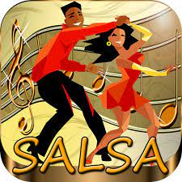

Generos Musicales
Electronica
Género musical que se crea y produce utilizando instrumentos electrónicos y electromecánicos, diversos instrumentos digitales o la llamada tecnología musical basada en circuitos.
Regueton
Rock
Se conoce como Rock a un conjunto de géneros variados de música popular, descendientes más o menos del Rock n' Roll original nacido en los Estados Unidos en la década de 1950.
Salsa

Es un género musical que surge de la mezcla de ritmos latinos tan reconocidos como el chachachá, el mambo y el son, entre otros, con el uso de instrumentos y estilos estadounidenses.
Regional
Regueton
Sobre nosotros
¡Bienvenido a Kinal Mussic, actualmente somos una pequeña pagina de musica, sin embargo eperamos darte un buen servicio con nuestro catalago de exitos en distintos generos musicales!